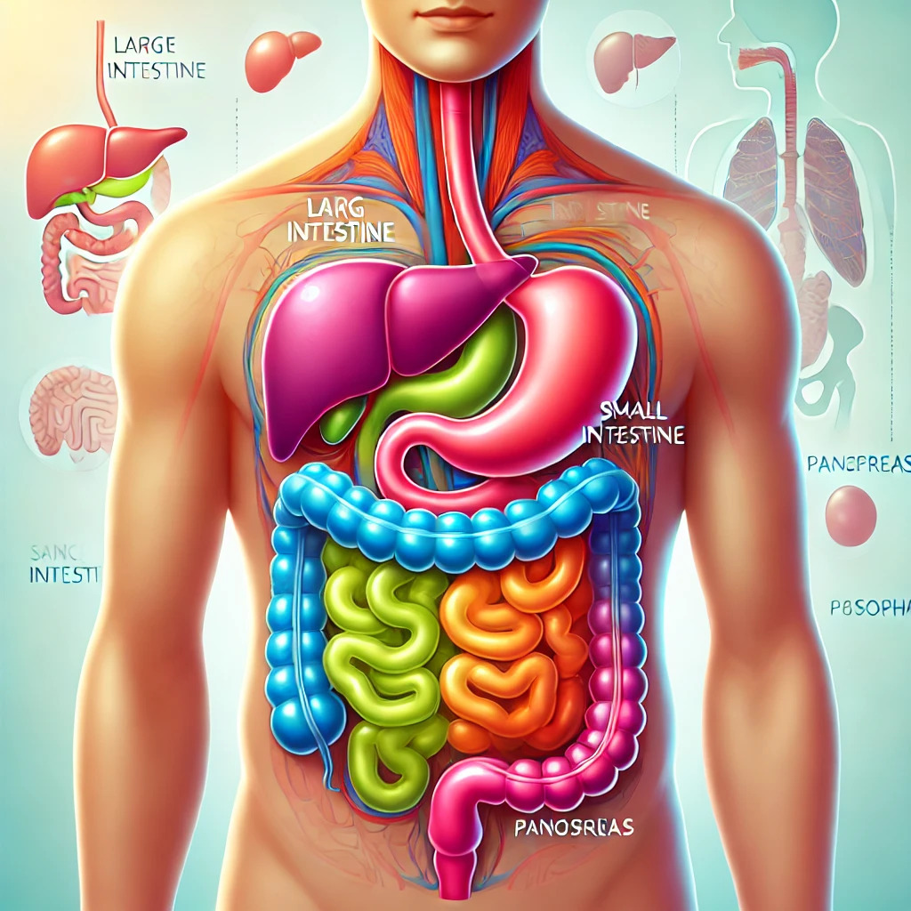
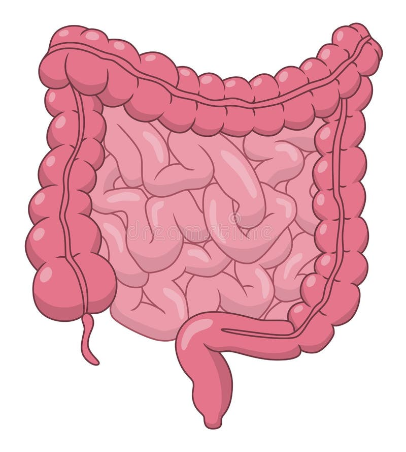
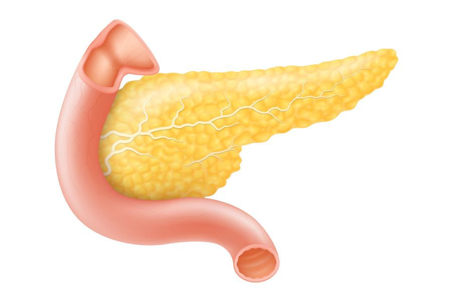
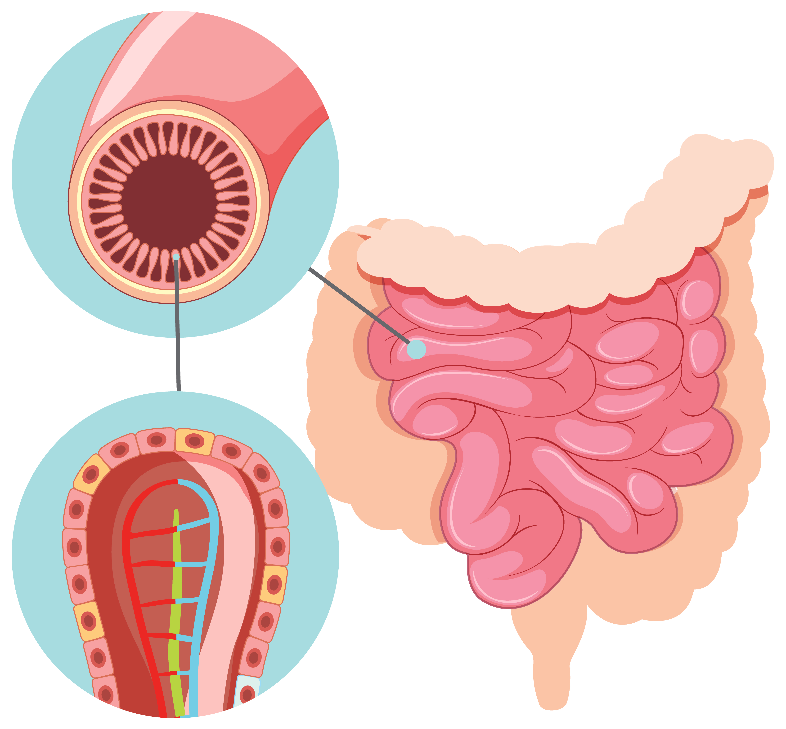
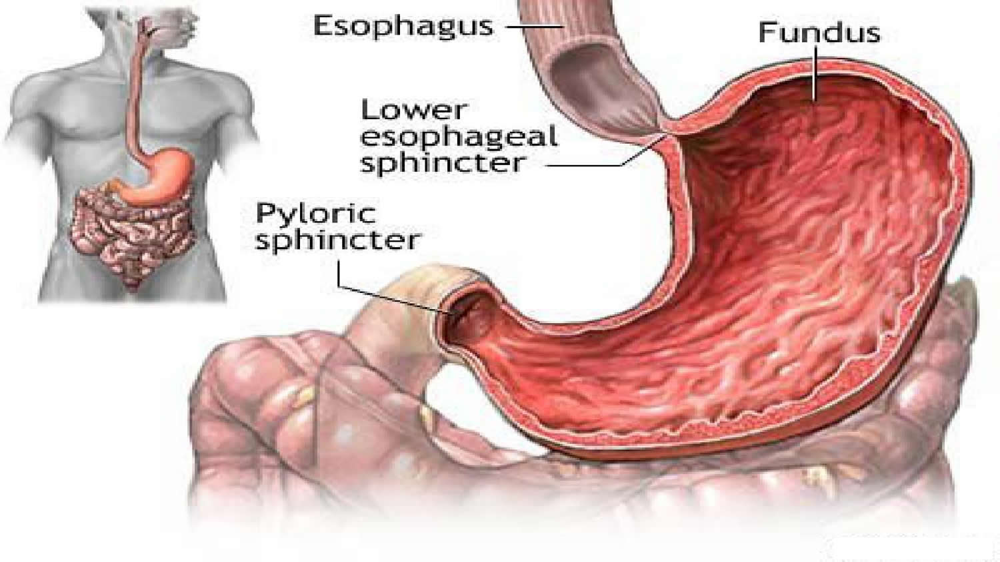

In an emergency? Need help now?
In the face of an emergency, the best time to act is now. Delay only increases the risk and complexity. Take the first step towards resolution immediately.
Whatsapp UsExpert Doctors
Specialized medical professionals dedicated to your care
Departments
Comprehensive medical specialties under one roof
Research Labs
State-of-the-art facilities for advanced diagnostics
Awards
Recognition for excellence in healthcare services
Services
Surgery
- Cancer & Colorectal
- Gall Bladder Stone
- laparoscopc Surgery
- Surgical Oncology
- Hernia & Intestine
- GI & HPB

Digestive System Overview
Explore the human digestive system and learn about its key organs.

Large Intestine Health
Maintain a healthy large intestine and prevent common digestive issues like IBS.

Pancreas Health
Support your pancreas health and manage conditions like pancreatitis effectively.

Small Intestine Health
Improve nutrient absorption and maintain a healthy small intestine.

Esophagus Health
Manage acid reflux and other esophageal conditions for better digestion.
High-Fiber Foods
Incorporate high-fiber foods for better digestion and overall health.
Department
Gastroenterology
Through understanding and proactive care, gastroenterology empowers individuals to reclaim their digestive health and live vibrant, fulfilling lives.
Gastroenterology: Understanding Digestive Health
Gastroenterology is a specialized branch of medicine focused on the digestive system and its disorders. This field encompasses the study, diagnosis, and treatment of conditions affecting the gastrointestinal (GI) tract, which includes the esophagus, stomach, small intestine, colon and rectum, pancreas, gallbladder, bile ducts, and liver.Scope of Practice
Gastroenterologists are highly trained physicians who diagnose and treat a wide range of digestive issues, including but not limited to:Diagnostic Procedures
Gastroenterologists employ various diagnostic tools and procedures to examine the digestive system and identify issues. Some common procedures include:1. Endoscopy: A flexible tube with a camera is used to examine the upper GI tract.
2. Colonoscopy: Similar to endoscopy, but used to examine the large intestine and rectum.
3. Capsule endoscopy: A pill-sized camera is swallowed to capture images of the small intestine.
4. Endoscopic ultrasound: Combines endoscopy with ultrasound to create detailed images of the digestive tract.
5. Liver biopsy: A sample of liver tissue is taken for examination.
Treatment Approaches
Treatment in gastroenterology can range from lifestyle and dietary changes to medication and surgery. Gastroenterologists often work closely with nutritionists, surgeons, and other specialists to provide comprehensive care for complex digestive disorders.Importance of Gastroenterology
Digestive health is crucial for overall well-being. Gastroenterologists play a vital role in:By focusing on the intricate workings of the digestive system, gastroenterologists help patients maintain optimal health and quality of life.
Testimonials
Dedicated to providing compassionate care, expert diagnosis, and tailored treatment plans, ensuring optimal health and well-being for every patient
Gallery
Our gallery offers a glimpse into the warm and welcoming environment we strive to create for our patients. Explore our images to see the modern amenities, comfortable patient rooms, and various treatment areas designed to ensure the best possible experience for your health and wellness journey.
Frequently Asked Questioins
Welcome to our Frequently Asked Questions (FAQ) section. Here, we've compiled answers to some of the most common questions we receive from our patients and visitors.
-
When should i see a Gastroentrologist?
You should see a gastroenterologist if you experience symptoms like persistent abdominal pain, bloating, heartburn, constipation, diarrhea, rectal bleeding, or jaundice
-
What is an Endoscopy?
An endoscopy is a procedure where a flexible tube with a camera (endoscope) is inserted through the mouth to examine the esophagus, stomach, and duodenum.
-
What is a colonoscopy?.How should i prepare for my colonoscopy?
A colonoscopy is a procedure where a flexible tube with a camera (colonoscope) is inserted through the rectum to examine the colon and rectum.Preparation typically involves a clear liquid diet and taking a prescribed laxative to empty the colon. Specific instructions will be provided by your gastroenterologist.
-
What is a biopsy and why might I need one?
A biopsy involves taking a small tissue sample from the digestive tract to be examined under a microscope. It helps diagnose conditions like cancer, inflammation, or infection.
-
What is Irritable Bowel Syndrome(IBS)?
IBS is a chronic condition affecting the large intestine, causing symptoms like cramping, abdominal pain, bloating, gas, diarrhea, and constipation.
-
What is gastroesophageal reflux disease (GERD)?
GERD is a chronic condition where stomach acid flows back into the esophagus, causing heartburn and other symptoms.
-
What are peptic ulcers?
Peptic ulcers are open sores that develop on the lining of the stomach, upper small intestine, or esophagus, often due to H. pylori infection or prolonged use of NSAIDs.
Patient Education Center
Explore Your Digestive System
Symptom Checker
Previous Feedback

santhanam.sudha@gmail.com
Rating: ★★★★★
Comment: Doctor.Vijay Baskar is very kind and attentive when we explain our problems. In the midst of heavy work, he read all the previous medical issues with great patience. Really I was mentally relieved of my pain because of the care he took. We can trust his guidance as he is not giving unnecessary medicine or tests.

vigneshhelloworld@gmail.com
Rating: ★★★★★
Comment: Excellent clinic good care, doctor spend precious time to understand patient problem giving solution and staff also take care amazingly best clinic in kanchipuram

sridharansridharan716@gmail.com
Rating: ★★★★★
Comment: Very good 👍🏻📈

kannamukesh2883@gmail.com
Rating: ★★★★☆
Comment: well care